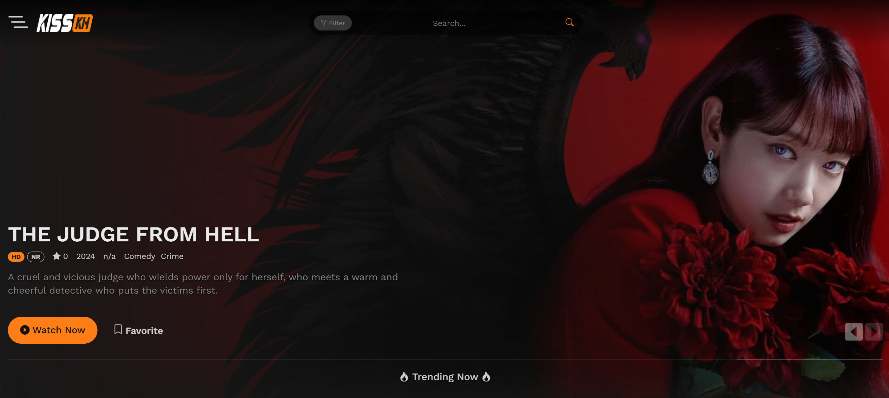

Welcome to KissKh - Stream Asian Dramas & Kshows in HD with English Subtitles
- KissKh live
- KissKh Official live
- KissKh Movies live
- KissKh Website live
Love Asian dramas and Kshows? Dive into East Asia’s captivating stories, beloved characters, and rich traditions with KissKh. Whether you’re drawn to romance, mystery, or comedy, KissKh offers a seamless way to watch all your favorite dramas in high definition with English subtitles. This article explores what makes KissKh the top choice for drama fans worldwide and why it’s the ultimate place to enjoy immersive storytelling from Asia, all while never missing a moment of the dialogue.
Introducing KissKh
KissKh is an online streaming platform made specifically for lovers of Asian dramas and Kshows. From popular Korean series to captivating Chinese, Japanese, and other Asian titles, KissKh brings viewers an expansive catalog of shows, all in high-definition (HD) with English subtitles. Whether you’re into romance, mystery, or comedy, KissKh has it all, ready to stream at no cost.
2. What Makes KissKh a Must-Visit for Drama Fans?
KissKh.cam has grown immensely popular among fans for its combination of free, high-quality streaming and user-friendly design. With an interface that feels like a well-organized digital library, KissKh makes finding your next series easy and enjoyable.
3. A Broad Library of Dramas and Kshows
Offering an impressive selection of shows, KissKh covers everything from Korean romantic dramas to Chinese historical epics. With both classic titles and recent releases, the platform ensures there’s something fresh for everyone. Drama fans can explore titles from various genres and countries, providing endless options for binge-watching.
4. High-Definition Streaming and Subtitles for All
Language is no barrier on KissKh, as all titles come with English subtitles, allowing global fans to enjoy Asian dramas easily. In addition to subtitles, KissKh emphasizes HD streaming quality, enhancing the viewing experience by bringing visuals to life in every scene.
5. A Simple, User-Centered Interface
The site’s layout is straightforward and user-friendly, allowing viewers to browse by genre, search specific titles, or find recommendations quickly. This ease of use makes it accessible to everyone, from casual viewers to dedicated drama fans.
6. Benefits of Choosing KissKh
KissKh brings unique advantages to the world of streaming Asian dramas. Here are just a few:
- Free access: Watch your favorite dramas without any subscription fees.
- Fast updates: Stay up-to-date with the latest episodes as soon as they’re available.
- Variety of genres: From romance and thrillers to fantasy and period dramas, there’s something for everyone.
- Community-driven: Discover top-rated shows through community suggestions and reviews.
7. How to Start Watching on KissKh
Accessing KissKh is easy and hassle-free. All you need is an internet connection and a device like a computer, tablet, or smartphone. Head over to the KissKh website, and you can start exploring their library instantly—no registration or account setup required!
8. Why KissKh is Unique Among Streaming Sites
While several platforms offer Asian dramas, KissKh stands out due to:
- Free streaming with no subscriptions or hidden fees, unlike many paid platforms.
- No account required, so you can start watching immediately.
- Timely updates with newly released episodes added frequently.
- Community recommendations that help you find new and trending shows easily.
If you’re looking for a convenient, affordable way to enjoy Asian entertainment, KissKh is a great option.
9. Is KissKh Safe and Legal?
Many viewers wonder if streaming on free platforms is safe or allowed. While KissKh offers a range of free content, it’s important to stay informed about regional laws. For added safety, use reliable antivirus software and avoid sharing personal information.
How to Keep Up with the Latest Releases?
KissKh is known for its fast updates, with new episodes of ongoing series often available within hours of release. You can check the site frequently or follow social media groups for the latest episode alerts. KissKh’s easy-to-navigate interface ensures finding new episodes is just a click away.
Conclusion
Overall, KissKh is an excellent choice for fans of Asian dramas and Kshows. Its extensive library, high-quality streaming, and easy accessibility make it a top choice for drama lovers around the world. Whether you’re a seasoned fan or new to Asian dramas, KissKh has something for everyone—completely free of charge. Grab some snacks, get comfortable, and dive into the world of Asian entertainment on KissKh!
Frequently Asked Questions (FAQs)
1. Is KissKh free?
Yes, KissKh is completely free with no account or subscription required.
2. Does KissKh offer English subtitles?
Yes, all shows come with English subtitles, making it easy for international viewers to follow along.
3. Are shows on KissKh available in HD?
Yes, KissKh provides high-definition (HD) streaming for an enhanced viewing experience.
4. How often is KissKh updated with new episodes?
KissKh is frequently updated, often adding new episodes shortly after their official release.
5. Is it safe to use KissKh?
While KissKh offers free streaming, it’s always a good idea to stay aware of potential risks and protect your device with antivirus software.